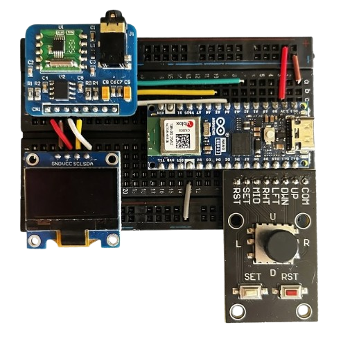

- Generated by
 1.9.8
1.9.8
|
Digitally Controlled FM Radio Receiver - Project P08 Final Version
Arduino NanoESP32 + RDA5807M FM Radio with Python Dashboard
|

Summary This project implements a Digitally Controlled FM Radio Receiver based on the Arduino Nano ESP32 and the RDA5807M module.Authorship Name: João Pedro Santos
Institution: ISEL (Instituto Superior de Engenharia de Lisboa)
Course: Electronics, Telecommunications and Computer Engineering
Project Jury Role Name Advisor Orientador Professor Vitor Fialho, Ph.D. Examination Committee Arguente Professor Luís Pires, Ph.D.
Block Diagram
Code Structure Module Description pfc_main.ino Main file - state machine and main loop btn.h / btn.cpp Joystick/buttons interface display.h / display.cpp OLED display interface rda.h / rda.cpp RDA5807M radio module interface
How to use Upload the firmware pfc.ino to the Arduino Nano ESP32. Connect the Arduino to the PC via USB. Run the Python script:
Use the dashboard to control the radio (volume, frequency, scans)
Features Manual and dashboard tuning. Volume and mute control. Full scan (80-108 MHz) and center scan (± 10 steps). Real-time RSSI visualization per frequency. Save charts (PNG) and data (TXT) of the scans.